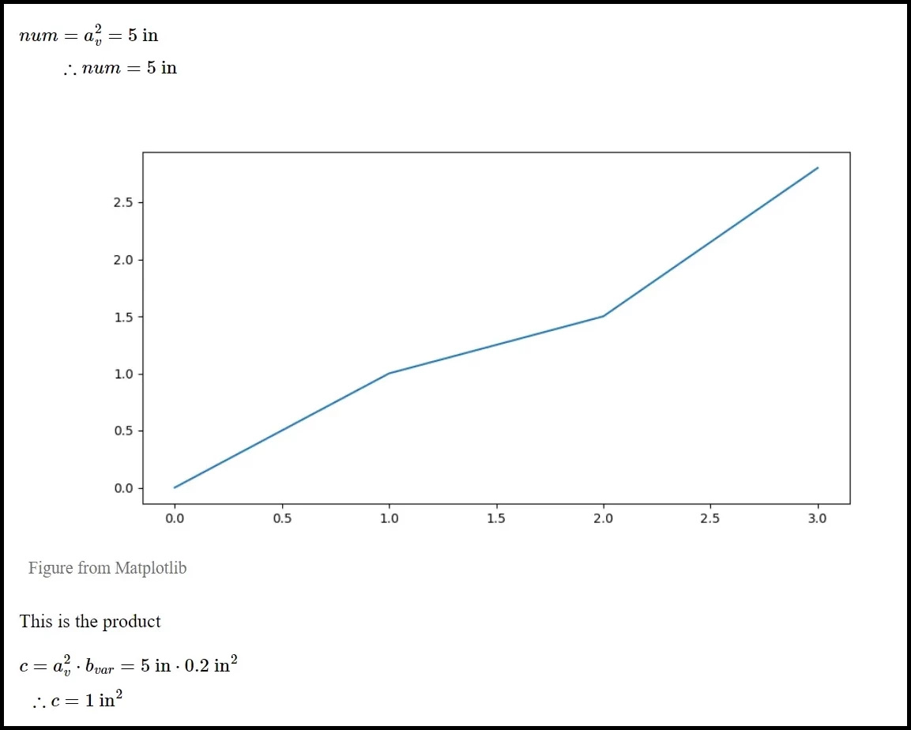

Figures in Calc Reports#
Efficalc currently supports three different sources for showing images and figures in your calculation report: raw bytes, files, and matplotlib figures.
If you need to show figures from a different source, raise an issue and let us know!
Here’s how a figure will display in your report when you add a caption:
Figure from a file#
To add a saved image file in your calculation report, just add the following FigureFromFile object where the file should display in the report.
By supplying the path to your file, FigureFromFile will lazy-load the image into the report when it comes time to generate the report.
API docs#
- class efficalc.FigureFromFile(file_path: str | PathLike, caption: str = None, full_width: bool = False)#
This displays figures from a file source in calculation reports. File type should be compatible with html image tags (e.g. .png, .jpg, .svg, .gif, etc.).
- Parameters:
file_path (str | PathLike) – The path to the image file
caption (str, optional) – The caption for the figure, defaults to None
full_width (bool, optional) – Whether the figure should be full width, defaults to False
- load_image_data()#
Loads the image data from the file as bytes.
Example#
1def calculation():
2 # The start of your calc report
3
4 # Display a figure from my computer in the report
5 FigureFromFile(r"C:\Pictures\calculations\calc_image.png")
6
7 # The rest of your calc report
Figure from a matplotlib figure#
Matplotlib is a popular python library for creating plots and figures. We created FigureFromMatplotlib as a simple wrapper around the matplotlib figures to easily integrate them into your calculation reports.
By supplying the matplotlib figure, FigureFromMatplotlib will lazy-load the figure into the report when it comes time to generate the report.
API docs#
- class efficalc.FigureFromMatplotlib(figure, caption: str = None, full_width: bool = False)#
This displays MatplotLib figures in calculation reports.
- Parameters:
figure (matplotlib.figure.Figure) – The MatplotLib figure object
caption (str, optional) – The caption for the figure, defaults to None
full_width (bool, optional) – Whether the figure should be full width, defaults to False
- load_image_data() bytes#
Loads the image data from the Matplotlib figure object as bytes.
Example#
1from matplotlib import pyplot as plt
2
3
4def draw_figure_with_matplotlib():
5 fig, ax = plt.subplots()
6 ax.plot([1, 2, 3, 4])
7 return fig
8
9
10def calculation():
11 # The start of your calc report
12
13 # Draw a figure and display it in the report
14 figure = draw_figure_with_matplotlib()
15 FigureFromMatplotlib(figure)
16
17 # The rest of your calc report
Figure from raw bytes#
If you are creating figures a different way and need a more flexible class to display your figures, you can use FigureFromBytes.
By supplying the the raw bytes, FigureFromBytes will generally require greater resources throughout the calculation process because it is storing the entire figure in memory. This may not be a problem, but if you are running batch calculations or using a lot of figures in your calculation, you may see performance issues.
API docs#
- class efficalc.FigureFromBytes(figure_bytes: bytes, caption: str = None, full_width: bool = False)#
This displays figures in calculation reports by directly supplying the figure bytes. Figure should be compatible with html image tags (e.g. .png, .jpg, .svg, .gif, etc.).
- Parameters:
figure_bytes (bytes) – The bytes of the image
caption (str, optional) – The caption for the figure, defaults to None
full_width (bool, optional) – Whether the figure should be full width, defaults to False
- load_image_data() bytes#
Loads the image bytes.
Example#
1def calculation():
2 # The start of your calc report
3
4 # Display a figure from raw bytes in the report
5 figure_bytes = generate_figure_bytes()
6 FigureFromMatplotlib(figure_bytes)
7
8 # The rest of your calc report